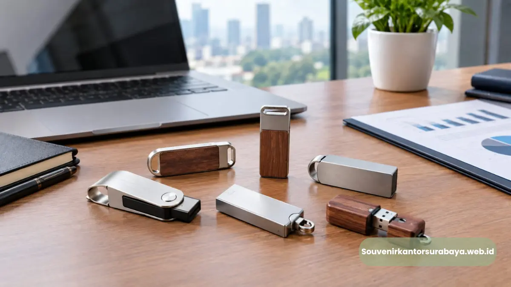
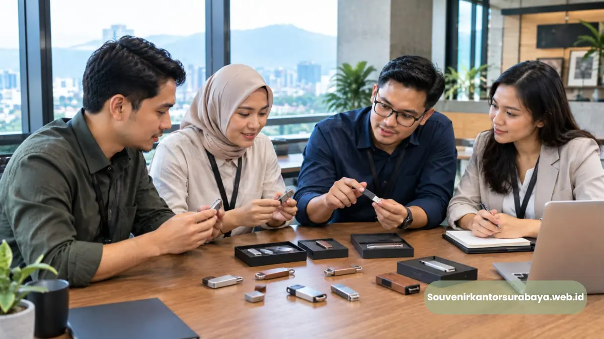

- Mengapa Flashdisk Custom Cocok untuk Souvenir Kantor?
- Bagaimana Flashdisk Custom Mendukung Event Korporat?
- Bagaimana Memasukkan Flashdisk ke Dalam Seminar Kit?
- Model Flashdisk Apa yang Sesuai untuk Identitas Brand?
- Bagaimana Membuat Logo Flashdisk Terlihat Profesional?
- Bagaimana Flashdisk Digunakan untuk Kebutuhan HRD?
- Bagaimana Flashdisk Digunakan untuk Meeting Corporate?
- Bagaimana Kantor di Bandung Dapat Memanfaatkan Flashdisk Custom?
- Bagaimana Menentukan Flashdisk untuk Seminar dan Training?
- Bagaimana Menggabungkan Flashdisk dengan Corporate Gifting?
- Bagaimana Menjaga Konsistensi Desain Merchandise Perusahaan?
Flashdisk Custom Logo untuk Kantor Bandung
Flashdisk custom logo perusahaan dapat menjadi souvenir kantor yang fungsional, mudah dipadukan dengan seminar kit, dan mendukung identitas brand dalam acara korporat.
- Flashdisk custom sesuai untuk perusahaan yang menginginkan merchandise dengan fungsi teknologi.
- Produk dapat digunakan pada seminar, training, workshop, meeting corporate, dan corporate gifting.
- Desain logo perlu memperhatikan ukuran, proporsi, warna, dan karakter brand.
- Flashdisk dapat dipadukan dengan notebook, pulpen, tas seminar, atau goodie bag.
- Seminarkit ID menyediakan solusi merchandise yang dapat disesuaikan dengan kebutuhan perusahaan.
Mengapa Flashdisk Custom Cocok untuk Souvenir Kantor?
Flashdisk custom cocok sebagai souvenir kantor karena menggabungkan fungsi penyimpanan data dengan identitas perusahaan dalam satu produk yang praktis digunakan.
Souvenir kantor dapat memiliki fungsi yang berbeda. Produk dekoratif lebih menonjolkan aspek visual, sedangkan produk fungsional dapat digunakan dalam aktivitas sehari-hari.
Flashdisk berada pada kategori merchandise teknologi yang memiliki fungsi langsung. Produk dapat digunakan untuk kebutuhan penyimpanan atau pemindahan file sesuai kebutuhan pengguna.
Ketika logo perusahaan diaplikasikan pada produk, flashdisk juga membawa identitas brand. Kombinasi fungsi dan branding tersebut membuatnya relevan untuk kebutuhan perusahaan.
Bagaimana Flashdisk Custom Mendukung Event Korporat?
Flashdisk custom mendukung event korporat dengan menyediakan merchandise fungsional yang dapat disesuaikan dengan tema acara dan identitas visual perusahaan.
Event korporat dapat mencakup berbagai kegiatan. Seminar, training, workshop, meeting, gathering, dan kegiatan MICE memiliki kebutuhan peserta yang berbeda.
Flashdisk dapat digunakan sebagai produk pendukung pada kegiatan yang mempunyai kebutuhan digital. Produk juga dapat menjadi bagian dari paket merchandise untuk peserta atau penerima tertentu.
Untuk event yang memiliki identitas visual kuat, logo perusahaan dan desain acara dapat diterapkan pada merchandise agar pengalaman peserta terlihat lebih konsisten.
Bagaimana Memasukkan Flashdisk ke Dalam Seminar Kit?
Flashdisk dapat dimasukkan ke dalam seminar kit bersama notebook, pulpen, tas, dan perlengkapan lain berdasarkan aktivitas peserta selama acara.
Seminar kit isi apa saja dapat ditentukan berdasarkan tujuan kegiatan. Jika peserta membutuhkan materi digital, flashdisk dapat menjadi salah satu item yang relevan.
Paket alat tulis seminar dapat terdiri dari notebook dan pulpen, kemudian dilengkapi flashdisk sebagai merchandise teknologi.
Tas seminar berfungsi sebagai wadah. Untuk training, paket dapat dikembangkan menjadi goodie bag pelatihan dengan komposisi yang lebih sesuai kebutuhan peserta.
Model Flashdisk Apa yang Sesuai untuk Identitas Brand?
Model flashdisk untuk brand perusahaan sebaiknya memiliki bentuk praktis, area logo memadai, desain proporsional, dan karakter visual yang sesuai identitas korporat.
Model Minimalis untuk Brand Formal
Desain minimalis dapat digunakan oleh perusahaan yang ingin menampilkan kesan profesional.
Model Kompak untuk Seminar
Flashdisk berukuran ringkas dapat dipadukan dengan notebook dan alat tulis tanpa membuat paket menjadi terlalu besar.
Model dengan Area Branding yang Jelas
Permukaan branding yang memadai dapat membantu logo terlihat lebih mudah.
Model untuk Corporate Gift
Untuk hadiah perusahaan, desain dapat diarahkan pada tampilan yang lebih representatif sesuai profil penerima.

Bagaimana Membuat Logo Flashdisk Terlihat Profesional?
Logo flashdisk terlihat profesional ketika ukuran, posisi, warna, dan metode penerapannya selaras dengan bentuk produk serta identitas visual perusahaan.
Logo sebaiknya menggunakan file resmi perusahaan agar proporsi dan bentuk identitas tetap konsisten.
Ukuran logo juga perlu mempertimbangkan area permukaan. Logo yang terlalu besar dapat mengurangi ruang visual, sedangkan logo yang terlalu kecil dapat mengurangi keterbacaan.
Warna juga perlu diperhatikan. Jika warna produk memiliki karakter kuat, penggunaan logo harus tetap menghasilkan kontras yang cukup.
Untuk paket merchandise, desain flashdisk sebaiknya memiliki hubungan dengan produk lain.
Bagaimana Flashdisk Digunakan untuk Kebutuhan HRD?
HRD dapat menggunakan flashdisk custom sebagai merchandise untuk onboarding, training, workshop internal, seminar karyawan, dan kegiatan pengembangan organisasi.
Program HRD sering membutuhkan perlengkapan peserta. Notebook dan pulpen dapat membantu pencatatan, sementara flashdisk dapat menjadi bagian dari merchandise teknologi.
Dalam kegiatan onboarding, perusahaan dapat memasukkan flashdisk ke dalam paket perlengkapan karyawan baru. Untuk training, flashdisk dapat dipadukan dengan notebook dan alat tulis.
Produk juga dapat diberikan dalam kegiatan internal yang memiliki tema atau program khusus.
Bagaimana Flashdisk Digunakan untuk Meeting Corporate?
Flashdisk custom dapat digunakan dalam meeting corporate sebagai merchandise fungsional untuk peserta, partner, atau pihak lain yang terkait kegiatan bisnis.
Meeting corporate biasanya membutuhkan perlengkapan yang terlihat profesional. Flashdisk dapat menjadi salah satu pilihan ketika perusahaan membutuhkan merchandise yang tidak terlalu besar dan mudah dibawa.
Produk dapat ditempatkan dalam paket bersama notebook dan pulpen. Untuk penerima tertentu, paket dapat dibuat lebih eksklusif dengan tambahan corporate gift yang sesuai.
Bagaimana Kantor di Bandung Dapat Memanfaatkan Flashdisk Custom?
Kantor di Bandung dapat menggunakan flashdisk custom untuk seminar, training, meeting, corporate gifting, dan kegiatan internal dengan kebutuhan branding perusahaan.
Melayani pengiriman ke Bandung, Seminarkit ID dapat menjadi bagian dari perencanaan merchandise perusahaan yang membutuhkan produk custom logo.
Kebutuhan dapat berasal dari perusahaan manufaktur, jasa, pendidikan, teknologi, organisasi, maupun sektor bisnis lainnya. Setiap perusahaan dapat memiliki karakter brand dan kebutuhan event yang berbeda.
Flashdisk dapat digunakan sebagai merchandise tunggal atau bagian dari paket yang lebih lengkap.
Bagaimana Menentukan Flashdisk untuk Seminar dan Training?
Flashdisk untuk seminar dan training sebaiknya disesuaikan dengan jumlah peserta, kebutuhan digital, konsep acara, dan komposisi seminar kit yang digunakan.
Untuk seminar yang banyak menggunakan materi presentasi digital, flashdisk dapat menjadi komponen yang relevan. Untuk training internal, flashdisk dapat dikombinasikan dengan notebook dan paket alat tulis.
Konsep MICE juga dapat memengaruhi komposisi merchandise. Kegiatan convention mungkin membutuhkan paket peserta, sedangkan meeting corporate dapat membutuhkan merchandise yang lebih ringkas.
Perusahaan dapat menentukan apakah flashdisk diberikan kepada seluruh peserta atau hanya kelompok penerima tertentu.
Bagaimana Menggabungkan Flashdisk dengan Corporate Gifting?
Flashdisk dapat digabungkan dengan corporate gifting melalui paket yang berisi beberapa merchandise dengan fungsi berbeda dan identitas visual yang konsisten.
Corporate gifting tidak harus terdiri dari produk mahal atau berjumlah banyak. Kesesuaian produk dengan penerima menjadi pertimbangan penting.
Flashdisk dapat dipadukan dengan notebook untuk kebutuhan pencatatan, pulpen untuk aktivitas kerja, dan pouch untuk penyimpanan.
Untuk partner atau pelanggan, paket dapat menggunakan desain yang lebih representatif. Untuk karyawan, komposisi dapat lebih berorientasi pada penggunaan sehari-hari.
Bagaimana Menjaga Konsistensi Desain Merchandise Perusahaan?
Konsistensi desain membuat flashdisk, notebook, tas, dan merchandise lain terlihat sebagai bagian dari satu identitas brand perusahaan.
Perusahaan dapat menggunakan logo yang sama pada berbagai produk, tetapi ukuran dan penempatan dapat berbeda sesuai karakter permukaan.
Warna brand juga dapat digunakan sebagai elemen penghubung. Jika tas menggunakan warna korporat, flashdisk dan notebook dapat menggunakan elemen warna yang sama secara lebih sederhana.
Konsistensi tersebut membantu menciptakan paket merchandise yang terlihat terencana dan sesuai dengan identitas perusahaan.
Baca Juga
Mengapa Seminarkit ID Dapat Mendukung Kebutuhan Flashdisk Custom?
Seminarkit ID membantu perusahaan menyiapkan flashdisk custom dan seminar kit dengan komposisi yang dapat disesuaikan berdasarkan kebutuhan acara serta identitas brand.
Seminarkit ID dapat membantu kebutuhan merchandise yang membutuhkan kombinasi produk teknologi dan perlengkapan seminar.
Perusahaan dapat menyampaikan jenis acara, jumlah penerima, kebutuhan custom logo, dan produk pendukung yang diinginkan.
Flashdisk kemudian dapat ditempatkan sebagai produk utama atau salah satu bagian dari paket.
Siapkan Merchandise Flashdisk untuk Kantor
Seminarkit ID membantu kantor menyiapkan flashdisk custom yang sesuai dengan kebutuhan branding, seminar kit, corporate gifting, dan event perusahaan di Bandung.
Untuk perusahaan yang sedang menyiapkan merchandise kantor, sampaikan kebutuhan acara, jumlah peserta, desain logo, dan konsep paket kepada Seminarkit ID.
Flashdisk custom dapat dipadukan dengan notebook, pulpen, tas seminar, atau goodie bag sesuai kebutuhan kegiatan. Hubungi Seminarkit ID untuk konsultasi merchandise perusahaan dan kebutuhan souvenir tahunan.
- Flashdisk custom cocok sebagai souvenir kantor fungsional yang memperkuat identitas brand perusahaan di Bandung.
- Produk dapat dipadukan dalam seminar kit, goodie bag, maupun paket corporate gifting yang lebih lengkap.
- Konsistensi desain antara flashdisk, notebook, dan tas seminar memperkuat tampilan paket merchandise secara keseluruhan.
- Hubungi Seminarkit ID untuk konsultasi dan perencanaan merchandise perusahaan Anda.

Hawa Nadira
Tim penulis CorporateGifts ID berfokus pada strategi souvenir kantor, merchandise korporat, dan inovasi brand untuk klien B2B.
Keahlian: Branding perusahaan, produksi souvenir, paket event, desain materi promosi.
Artikel Terkait

Flashdisk Custom Logo untuk Kantor Jakarta
Flashdisk custom logo untuk kantor di Jakarta, cocok sebagai merchandise seminar, meeting, training, dan corporate gifting perusahaan.
Baca Selengkapnya
Flashdisk Kartu Kapasitas Besar Souvenir Kantor Surabaya
Flashdisk kartu kapasitas besar menjadi pilihan souvenir kantor yang fungsional dan mudah disesuaikan dengan kebutuhan perusahaan.
Baca SelengkapnyaSeminar Kit Surabaya Custom Logo untuk Branding Perusahaan
Seminar kit dengan cetak custom logo menjadi salah satu strategi branding pasif yang sangat efisien.
Baca Selengkapnya